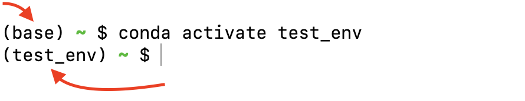
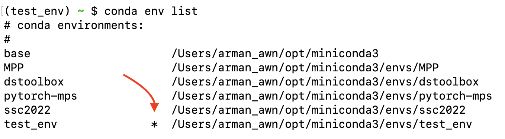
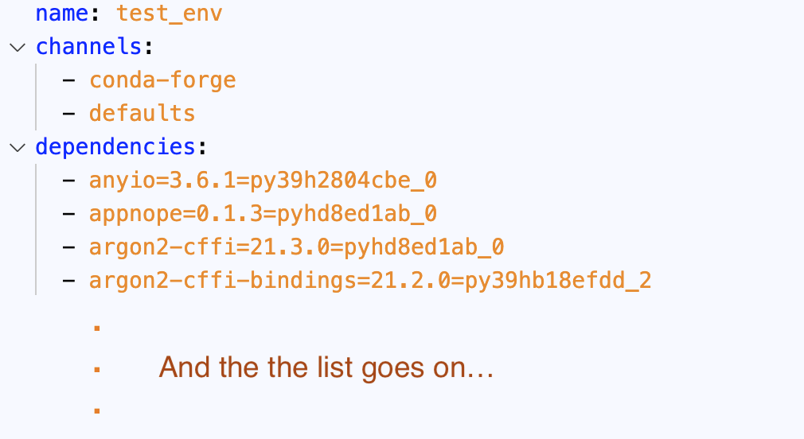
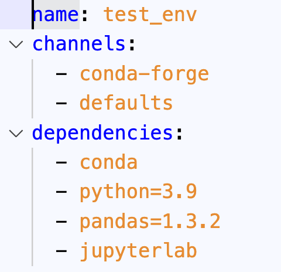
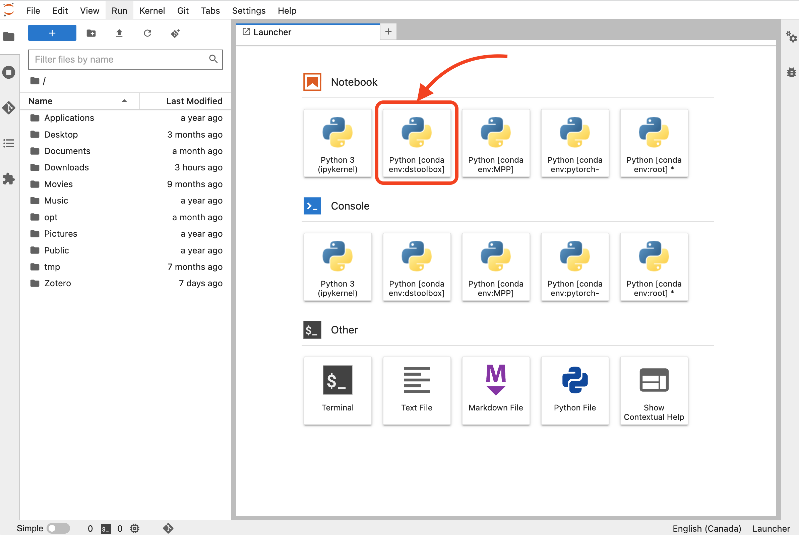
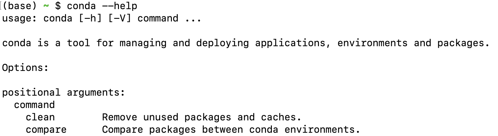
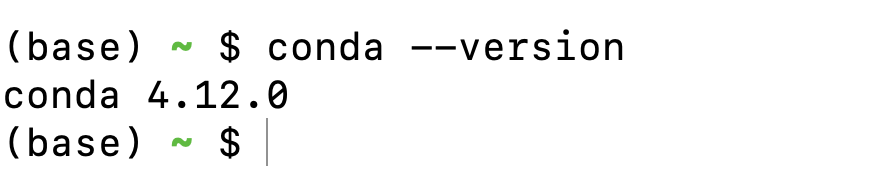

Why use virtual environments?
- More often than not, you work on multiple projects on your computer.
- That means you need the projects’ computational environments to be isolated from each other.
- Isolated environments are also a first step towards reproducibility.
- You need to have the right versions of packages to ensure that everything works great together.
Virtual environments accomplishes exactly this:
It lets you have multiple versions of packages on the same computer without causing conflict.
Conda
Logo source
Managing Conda environments
What is a Conda environment and why is it so useful?
Benefits of using environments:
- Reproducibility
- Easily manage different versions
- Create isolated environments
Creating a Conda environment
There are two ways of setting up a Conda environment:
Creating the environment and installing packages manually
Creating the environment using a file in .yaml format
Creating environments manually
conda create -n test_env creates a new environment called test_env
conda create -n test_env -c conda-forge python=3.9 jupyterlab pandas=1.3.2
Activating a Conda environment
- The default Conda environment is called
base.
- To activate a new environment, run
conda activate followed by the name of the environment:

Noticed how your shell prompt changed?
- To see all environments, run
conda env list:

Sharing environments with others
Environments can be shared by exporting to an environment file:
conda env export -f environment.yaml
which list each package and its version in the format package=version=build.
Let’s look inside environment.yaml:

Sharing environments with others
If you want to only list the packages you explicitly installed, you should use the --from-history flag:
conda env export --from-history -f environment.yaml
This time, the environment file will look like this:

Creating environment from an environment file
conda env create --file environment.yaml
Cloning an environment
conda create --name live_env --clone test_env
Deleting an environment
conda env remove -n live_env
Use Conda environments with JupyterLab
By default, JupyterLab only sees the Conda environment where it is installed.
Follow these steps to access your Conda environments in JupyterLab:
- Install
nb_conda_kernels in your base environment
conda install nb_conda_kernels
- Install
ipykernel in your dstoolbox environment
Launching a notebook with a specific Conda environment

Listing installed packages
# packages in environment at //miniconda/envs/test_env:
#
Using Anaconda Cloud api site https://api.anaconda.org
blas 1.1 openblas conda-forge
ca-certificates 2016.9.26 0 conda-forge
certifi 2016.9.26 py27_0 conda-forge
cycler 0.10.0 py27_0 conda-forge
freetype 2.6.3 1 conda-forge
functools32 3.2.3.2 py27_1 conda-forge
libgfortran 3.0.0 0 conda-forge
Searching packages
Using Anaconda Cloud api site https://api.anaconda.org
Run 'anaconda show <USER/PACKAGE>' to get more details:
Packages:
Name | Version | Package Types | Platforms
------------------------- | ------ | --------------- | ---------------
IOOS/rasterio | 1.0a2 | conda | linux-64, win-32, win-64, osx-64
Terradue/rasterio | 0.32.0 | conda | linux-64
: Fast and direct raster I/O for use with Numpy and SciPy
anaconda/rasterio | 0.36.0 | conda | linux-64, win-32, win-64, linux-32, osx-64
conda-forge/rasterio | 1.0a2 | conda | linux-64, win-32, win-64, osx-64
: Rasterio reads and writes geospatial raster datasets
dharhas/rasterio | 0.23.0 | conda | win-64
: Rasterio reads and writes geospatial raster datasets.
krisvanneste/rasterio | 0.26.0 | conda | win-64
ocefpaf/rasterio | 0.19.1 | conda | linux-64, osx-64
omgarcia/rasterio | 0.25.0 | conda | linux-64
pypi/rasterio | 0.13.2 | pypi |
: Fast and direct raster I/O for Python programmers who use Numpy
Found 15 packages
Installing packages
- The first column of the output of
conda search shows the channel/package-name.
- You can use this information to install a desired package in the active environment.
Install version 0.35 of the package rasterio from the conda-forge channel using:
conda install -c conda-forge rasterio=0.35
Add preferred channels to Conda using:
conda config --add channels conda-forge
Removing a package
Remove rasterio package from test_env using:
conda remove -n test_env rasterio
Learning more about Conda
- Available Conda commands:

- Full documentation of a command:

Let’s apply what we learned!
{kind=link}